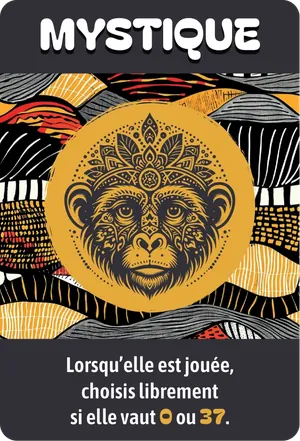
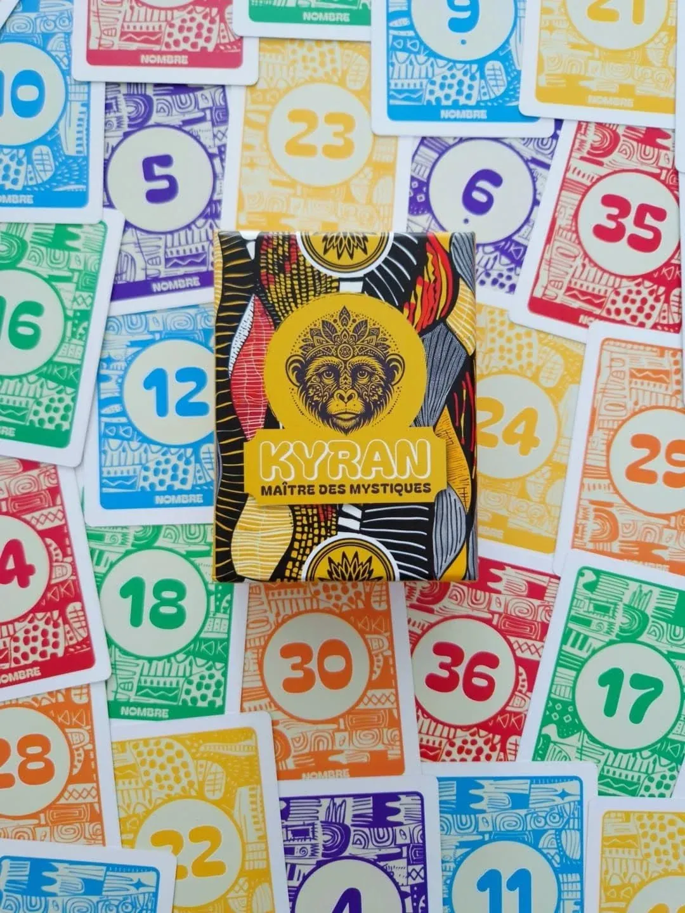
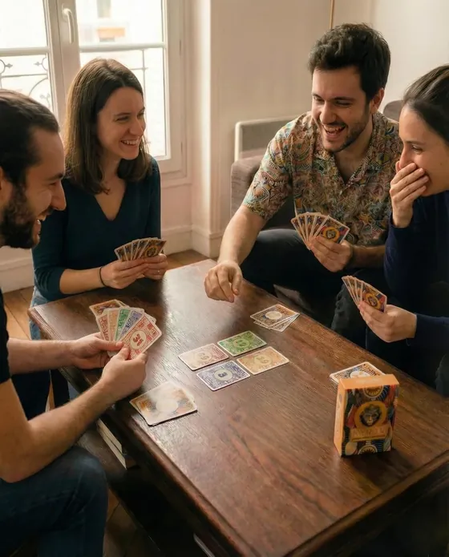
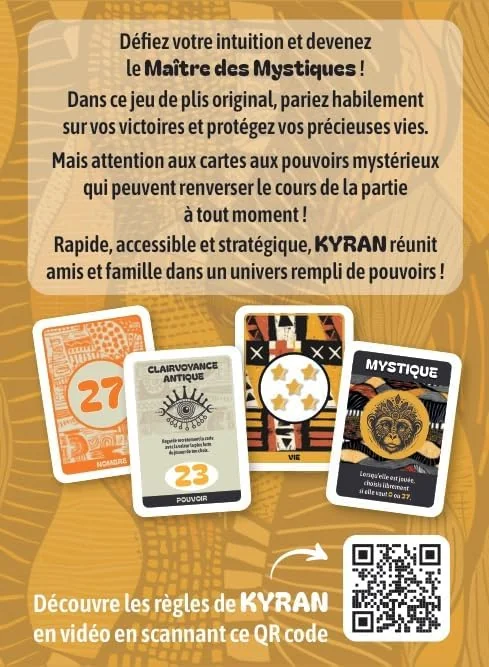

Jeu de cartes · 3 à 6 joueurs · 30 min · dès 8 ans
KYRAN, le jeu de cartes de plis, de bluff et de paris
Annoncez combien de plis vous allez gagner. Le total des paris ne tombe jamais juste : à chaque manche, quelqu'un se trompe. Cartes Pouvoir et manche jouée la carte sur le front font le reste.
9,99 € + 2,99 € de port en France
4,7/5 · 33 évaluations sur Amazon- Expédié sous 24 à 48 h
- Suivi La Poste
- Retour possible sous 14 jours

Les cartes spéciales
Les cartes qui renversent tout
4 cartes Pouvoir et la Mystique. Chaque Pouvoir existe en deux valeurs : touchez-les pour voir les deux cartes.

La Mystique
Elle vaut 0 ou 37, au choix, au moment où vous la posez. À 37, aucune carte ne la bat.
Valeur au choix
Sceau du Destin
Tirez au hasard une carte dans la main d'un joueur : il doit la jouer tout de suite.
Sans effet si vous jouez en dernier
Clairvoyance Antique
Regardez en secret la plus forte carte d'un joueur.
Active à tout moment
Bénédiction des Ancêtres
Choisissez un joueur : il doit jouer tout de suite sa plus faible carte.
Sans effet si vous jouez en dernier
Voile du Néant
Échangez la valeur de votre carte avec celle d'une carte déjà posée.
Sans effet si vous jouez en premierÀ 3 ou 4 joueurs, on joue avec 4 cartes Pouvoir et la Mystique. À 5 ou 6, avec toutes les cartes.

Le matériel
Dans la boîte
- 36 cartes Nombrede 1 à 36
- 8 cartes Pouvoir et 1 carte Mystiquecelles qui renversent la partie
- 30 cartes Vie5 par joueur, jusqu'à 6 joueurs
- 7 cartes de règleset un QR code vers les règles en ligne
- Une boîte rigide de 175 g11,5 × 8,5 × 2,8 cm : elle se glisse dans un sac
Avis Amazon
Ce qu'en disent les joueurs
Avis publiés sur Amazon.fr, reproduits sans retouche.

« Ce qui m’a particulièrement plu, c’est l’ambiance générée autour de la table. Les phases de bluff, les paris ratés, les retournements de situation et certaines manches spéciales créent de nombreux moments de rire et de surprise. »
Toto Club des Testeurs Vine
« Ce qui fait vraiment la différence, ce sont les cartes pouvoirs. Elles provoquent des retournements de situation imprévisibles qui cassent la routine et maintiennent la tension jusqu'au bout. »
patrick Achat vérifié
Nickel
Jeu simple et facile
Un jeu mystique et distrayant
Un indispensable pour des soirées animées !!
Ravie
Intéressant
Super jeu
Super jeu à faire en famille ou entre amis. Nous aimons les jeux de société et le kyran est une belle découverte. Idéal pour un cadeau.
Pas mal, mais il existe déjà beaucoup de jeux qui réinventent le tarot africain
Cartes de belle qualité, jeu très sympa
Jeu de bluff simple et sympa 🎲
Avant d'acheter
Vos questions
Peut-on jouer à deux ?
Non. KYRAN se joue de 3 à 6 joueurs.
Est-ce difficile à apprendre ?
Les règles tiennent sur 7 cartes. Pour une première partie, jouez sans les cartes Pouvoir ni la Mystique. Vous pouvez aussi apprendre en ligne, gratuitement, avec l'Initiation.
À partir de quel âge ?
Dès 8 ans. Une partie dure environ 30 minutes.
Quand vais-je recevoir le jeu ?
Le colis part sous 24 à 48 h ouvrées, avec suivi La Poste. Comptez ensuite 2 à 4 jours ouvrés en France, 3 à 6 jours ouvrés dans les autres pays livrés.
Où livrez-vous et combien coûte le port ?
En France métropolitaine, le port coûte 2,99 € par commande, quel que soit le nombre de boîtes. Nous livrons aussi la Belgique, le Luxembourg, la Suisse et Monaco : les frais sont calculés selon l'adresse et affichés avant le paiement.
Et si le jeu ne me convient pas ?
Vous avez 14 jours après réception pour le renvoyer. Les frais de retour sont à notre charge. Détails dans les CGV.
Boutique officielle
Commandez KYRAN
En direct du créateur, expédié depuis la France.
En stock · expédié sous 24 à 48 h
KYRAN, Maître des Mystiques
Jeu de cartes de plis et de paris · 3 à 6 joueurs · 30 min · dès 8 ans
Sur Amazon, le jeu coûte 17,99 € : vous économisez 4 € en commandant ici.
Paiement sécurisé par Stripe : carte bancaire, Apple Pay, Google Pay.

L'origine
D'où vient KYRAN ?
KYRAN est un jeu de cartes de plis pour 3 à 6 joueurs, créé et édité en France par Corentin Sence. Il reprend le principe du Tarot Africain, aussi appelé Whist 22 : parier le nombre exact de plis, sans que le total puisse tomber juste.
KYRAN y ajoute quatre cartes Pouvoir, une carte Mystique, des cartes Vie à la place de la feuille de score, et la manche jouée la carte sur le front. Pour le situer, comparez-le aux autres jeux de plis ou aux jeux comme Skyjo.
Le blog
Guides pour choisir un jeu
Sélections de jeux de cartes et idées pour vos soirées.

Jeux de cartes pour ados : 6 jeux qui tiennent une soirée entre amis
Six jeux de cartes pour adolescents, choisis selon l’ambiance qu’ils créent (bluff, réflexes, paris) et non selon l’âge imprimé sur la boîte.
Lire l'article
Jeux de cartes pour seniors : 6 jeux à jouer sans écran
Six jeux de cartes à partager entre grands-parents, parents et petits-enfants, choisis selon le rythme, la règle et la durée, sans promesse de santé.
Lire l'article Cartes
14 min
Cartes
14 min
Jeux de cartes et cerveau : ce que disent les études
Mémoire de travail, fonctions exécutives, cohortes PAQUID et Lothian : ce que les études observent sur les jeux de cartes, et ce qu’elles ne prouvent pas.
Lire l'articlePrêt pour la première manche ?
Commandez KYRAN, ou essayez-le gratuitement en ligne.
Une boîte de 175 g, expédiée sous 24 à 48 h avec suivi.
Le principe
Comment on joue ?
Trois gestes à chaque manche. Les règles tiennent sur 7 cartes.
Pariez
Regardez vos cartes et annoncez le nombre exact de plis que vous allez gagner. Le dernier à parler ne peut pas faire tomber le total juste.
Jouez
Chacun pose une carte. La plus forte remporte le pli. Une carte Pouvoir peut tout renverser.
Comptez
Pari juste : vous ne perdez rien. Pari raté : vous perdez autant de cartes Vie que d'écart entre votre pari et vos plis.
Les manches se jouent à 7, 6, 5, 4, 3 puis 2 cartes. Vient ensuite la manche Mystique : une seule carte, posée sur le front. Vous voyez celles des autres, jamais la vôtre. Puis le cycle repart à 7.
Fin de partie : dès qu'un joueur n'a plus de Vies. Celui qui en a le plus devient Maître des Mystiques.
Lire les règles complètes Essayer gratuitement en ligne